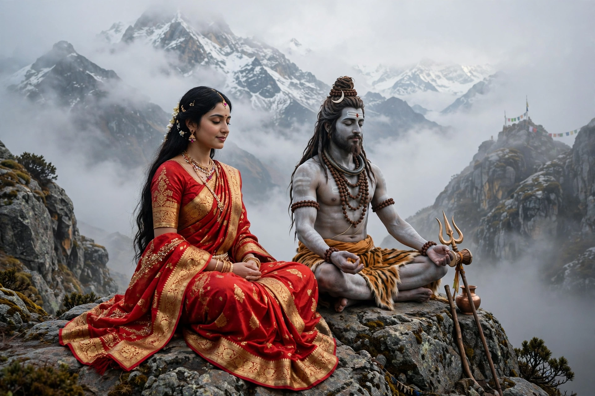

From Wikipedia, the free encyclopedia
| Parvati | |
|---|---|
| Affiliation | Hinduism; goddess of love, fertility, devotion and power |
| Consort | Shiva |
| Children | Ganesha, Kartikeya |
| Parents | Himavan (the Himalaya) and Mena |
| Other forms | Uma, Gauri; fierce forms include Durga and Kali |
| Mount | Lion or tiger |

Parvati (Sanskrit: पार्वती, "Daughter of the Mountain") is the Hindu goddess of love, fertility, marital devotion and divine power, the wife of Shiva and mother of Ganesha and Kartikeya. Daughter of Himavan, king of the Himalayas, she is in the Puranic telling the rebirth of Sati, Shiva's first wife, come back to win the widowed, world-renouncing god by a devotion as extreme as his own asceticism. In her gentle aspect she is the supreme example of the devoted wife and mother; identified with Shakti, she is equally the source of the fierce forms Durga and Kali.
After Sati's death Shiva withdrew into meditation, indifferent to the world, while the demon Taraka — killable only by a son of Shiva — oppressed the gods. Reborn as Parvati, she served the meditating god and, when service failed, undertook austerities of legendary severity: standing among fires in summer and in icy water in winter, eating first leaves, then nothing — becoming Aparna, "she who ate not even a leaf". The love god Kama, sent to wake Shiva's desire, was burned to ash by his third eye, yet Parvati's own penance prevailed: Shiva tested her in disguise, praising Shiva's faults, and when she defended her lord and turned away in anger, he revealed himself and consented to marry her. Their wedding is one of the great set-pieces of Sanskrit poetry, retold in Kalidasa's Kumarasambhava.
Parvati fashioned Ganesha from the paste of her own body to guard her bath — the act that cost him his human head and gained him the elephant's. Her household with Shiva on Mount Kailasa, with its quarrels, games of dice and reconciliations, is Hinduism's great divine family romance. As Annapurna she feeds the world at Varanasi; as Meenakshi she rules Madurai; and in Shakta theology she is not merely a consort but the supreme power itself, of whom Durga and Kali are the battle-forms and Lakshmi and Saraswati kindred aspects.